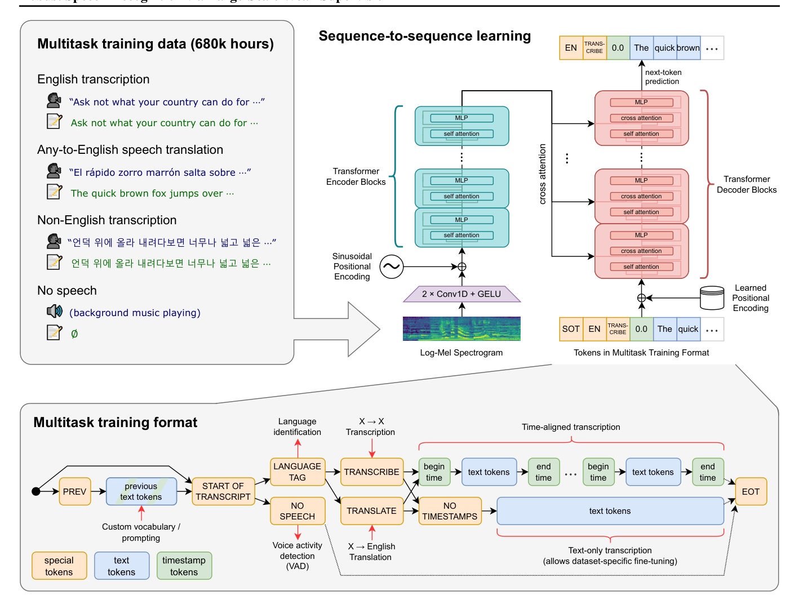
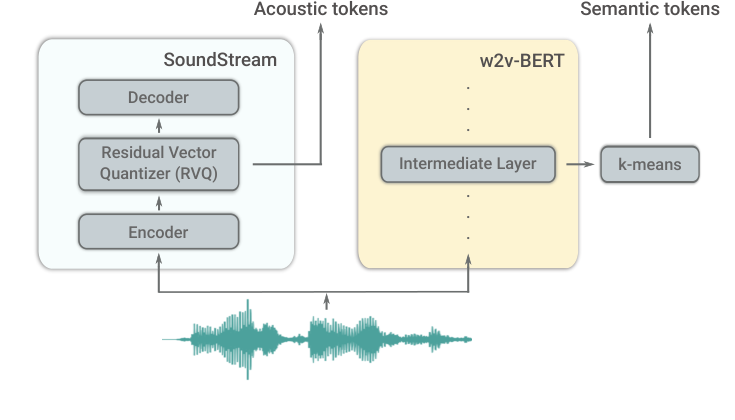
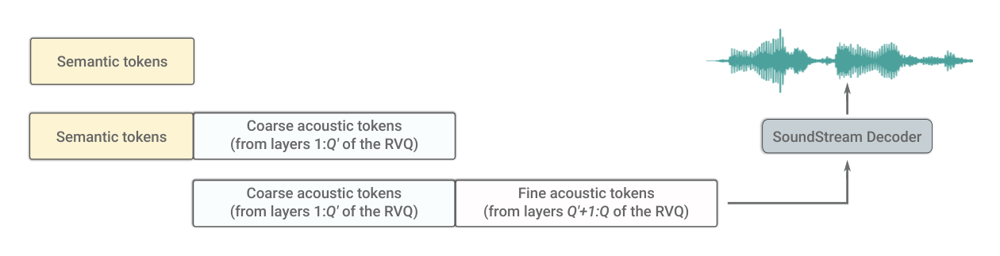
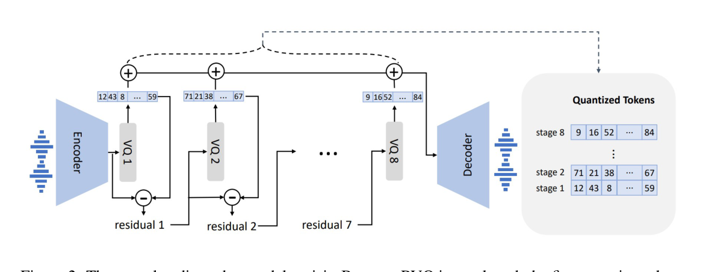
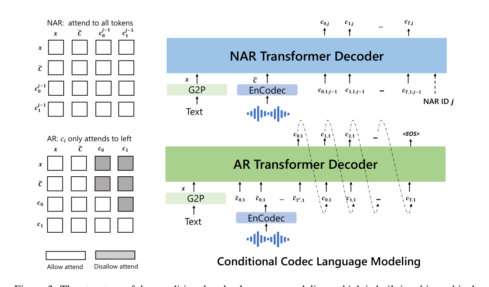
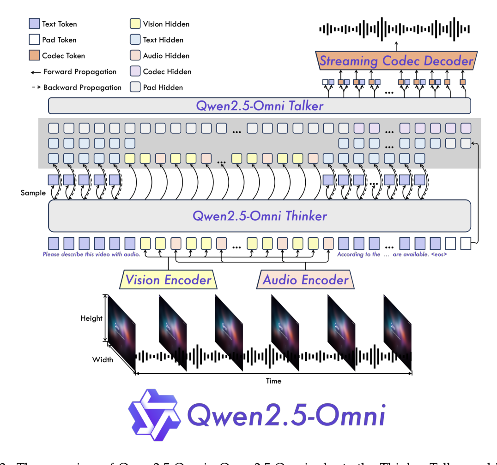
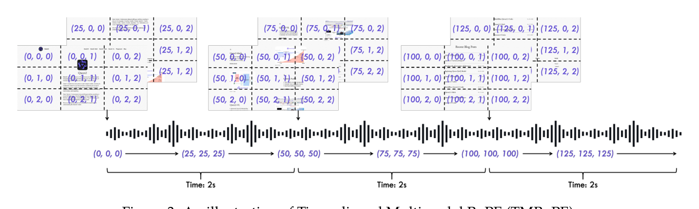

音频多模态大模型¶
📄 涉及论文链接： - Robust Speech Recognition via Large-Scale Weak Supervision (Whisper) (2022) - AudioLM: a Language Modeling Approach to Audio Generation (2022) - Neural Codec Language Models are Zero-Shot Text to Speech Synthesizers (VALL-E) (2023) - Qwen2.5-Omni Technical Report (2025)
目录¶
- 核心要点
- 音频多模态 vs 文本多模态：核心技术差异
- 第0章：音频领域基础知识
- 0.1 时域与频域
- 0.2 傅里叶变换与 STFT
- 0.3 频谱图
- 0.4 mel 频谱图
- 0.5 log-mel 频谱图
- 0.6 音频特征处理链路
- 第一部分：语音识别基础
- 1. Whisper
- 第二部分：音频语言模型
- 2. AudioLM
- 3. VALL-E
- 第三部分：全模态感知
- 4. Qwen2.5-Omni
- 技术路线对比与总结
核心要点¶
- 音频表征的核心：将原始波形转为 80/128 通道 log-Mel 频谱图，用 25ms 窗口 + 10ms 跳步提取时频特征，再用 Transformer 编码器处理
- 音频 tokenization 的两类路线：① 语义 token（如 w2v-BERT 中间层 → k-means 离散化）捕捉语言内容；② 声学 token（如 SoundStream/EnCodec RVQ）捕捉音色和音质，两者互补
- AudioLM 的范式突破：将音频生成转化为语言建模问题，用混合 tokenization（语义 + 声学）+ 三阶段层级生成解决长期一致性与高保真重建的矛盾
- VALL-E 的零样本 TTS：EnCodec 8 级 RVQ tokenize 音频，AR 模型生成第一级量化器 token（内容+时长）→ NAR 模型并行生成其余 7 级（音色+音质），仅需 3 秒参考音频即可克隆说话人声音
- Qwen2.5-Omni 的架构设计：Thinker（LLM，理解+文本生成）+ Talker（双轨 AR，流式语音生成），TMRoPE 对齐音频（每 40ms 一个时间 ID）和视频（每帧一个时间 ID）的时序
音频多模态 vs 文本多模态：核心技术差异¶
| 挑战 | 文本/图像模型 | 音频模型 |
|---|---|---|
| 输入表示 | 离散 token / 2D patch | 连续波形 → log-Mel 频谱图 → 离散 token |
| 时间分辨率 | 不适用 | 25ms 窗口，10ms 跳步，每秒 100 帧特征 |
| 信息结构 | 语义信息明确 | 语义信息（内容）与声学信息（音色、韵律）耦合 |
| 生成目标 | 离散 token 序列 | 波形（连续）或离散声学 token → 解码为波形 |
| 对齐问题 | 文本有自然边界（词、句） | 音频与文本对齐复杂，说话速度因人而异 |
第0章：音频领域基础知识¶
本章为 VLM 背景的读者提供音频信号处理的核心概念，为后续理解 Whisper、AudioLM、VALL-E、Qwen2.5-Omni 等模型的输入表示打下基础。
0.1 时域与频域¶
时域是音频最直观的表示：横轴时间，纵轴幅度，就是一条波形曲线。WAV 文件存的就是这种 PCM 数据。16kHz 采样率意味着每秒 16000 个采样点，直接记录气压随时间的变化。
时域的问题在于：相邻采样点高度冗余，且看不出声音由哪些频率成分构成。
频域换个角度看同一段信号：横轴频率，纵轴能量。一段音频的频谱能看出"低音多还是高音多"，但完全丢了时间信息——看不出"前 3 秒是鼓声、后 5 秒是钢琴"。
语音这种时变信号需要时频联合表示，同时保留时间和频率信息。
0.2 傅里叶变换与 STFT¶
傅里叶变换的核心思想：任何复杂波形都可以分解成一组正弦波的叠加，每个正弦波有固定的频率、幅度、相位。对整段音频做傅里叶变换得到频谱，对一短段音频做傅里叶变换得到短时频谱。
短时傅里叶变换（STFT） 是音频处理的基石：把音频切成一段段重叠的短窗，对每个窗分别做傅里叶变换，得到"该时段内各频率的能量"。
STFT 有两个核心参数：
- 窗口大小：每个短窗覆盖多长时间。常见值 25ms（语音）、50ms（音乐）。窗越长频率分辨率越高但时间分辨率越低，两者不能兼得（时频不确定性原理）
- 帧移：相邻窗起点的时间间隔。常见值 10ms，通常为窗口大小的 25%~50%。窗间重叠是为了平滑过渡，避免边界处信号丢失
Whisper、Qwen-Audio 的标准配置：25ms 窗口 + 10ms 帧移。
0.3 频谱图¶
STFT 的输出堆叠起来就是一张频谱图（spectrogram）：横轴时间帧，纵轴频率，每个像素的明暗代表该时频单元的能量大小。
本质就是一张单通道图像，可以直接用 CNN 或 Transformer 处理。Whisper 编码器就是把频谱图当成 token 序列——每个时间帧是一个 token，频率维度是它的特征向量。
一帧 STFT 输出的是复数值（含幅度和相位）。频谱图通常只取幅度谱或功率谱（幅度的平方），丢弃相位。相位在听感上重要但识别任务里用得少。
0.4 mel 频谱图¶
STFT 直接输出的频率轴是线性的：0~8000Hz 均匀分布。但人耳对低频敏感（100Hz 和 200Hz 差别明显）、对高频迟钝（8000Hz 和 8100Hz 几乎听不出区别）。
mel 尺度模拟人耳感知：低频部分分辨率高，高频部分被压缩。1000Hz 对应 1000 mel 是参考点，100Hz 约 150 mel，8000Hz 约 2840 mel。
mel 滤波器组在频率轴上布一组三角形带通滤波器（通常 80 个），低频窄而密集、高频宽而稀疏。每个滤波器只让一个 mel 频带内的能量通过，把线性频谱从 201 维压缩成 80 维。
效果：低频信息高分辨率保留，高频冗余信息被合并，维度降低计算量也降低。这就是 Whisper、Qwen-Audio 输入的"80 通道 mel 频谱"。
0.5 log-mel 频谱图¶
mel 频谱的原始能量值跨度很大（从 0 到几百万），人耳对响度的感知又是对数的：能量翻倍听起来不是"响一倍"。
标准做法是对 mel 频谱每个值取对数，得到 log-mel 频谱图。好处：
- 数值范围紧凑（0~几十 dB），训练更稳定
- 模拟人耳感知，对小响度变化更敏感
- 数值接近正态分布，适合神经网络
Whisper、Qwen-Audio、大多数现代 ASR 都用 log-mel 频谱图作为输入。论文里写"80 通道 mel 频谱"几乎都默认是 log-mel。
0.6 音频特征处理链路¶
从原始音频到模型输入的标准流程：
原始波形（16kHz，每秒 16000 个采样点）
↓ 加窗分帧（STFT，25ms 窗，10ms 帧移）
↓ 功率谱（每帧 ~201 个频率点）
↓ mel 滤波器组（80 通道三角形滤波器）
↓ 对数变换
log-mel 频谱图（80 通道 × T 帧）
↓ 喂给编码器（Whisper / Qwen-Audio）
音频表征序列（T' × d，d 为模型隐藏维度）
另一条路线是离散 token 化（AudioLM、VALL-E 使用）：
波形 → 神经编解码器（EnCodec / SoundStream）→ 离散 token 序列 → 当成"音频文字"喂 LLM
关键参数速查（Whisper / Qwen-Audio 默认）：
| 参数 | 值 |
|---|---|
| 采样率 | 16kHz |
| 窗口大小 | 25ms（约 400 采样点） |
| 帧移 | 10ms（每秒 100 帧） |
| mel 通道数 | 80 |
掌握这条链路后，再看 Whisper 就是把 80×T 的 log-mel 频谱图喂进 Transformer，输出 T'×d 的表征序列，和 ViT 把图像切成 patch 再编码是完全同构的思路。
第一部分：语音识别基础¶
1. Whisper - 大规模弱监督语音识别 (2022)¶
📄 论文：Robust Speech Recognition via Large-Scale Weak Supervision
作者：Alec Radford, Jong Wook Kim, Tao Xu, Greg Brockman, Christine McLeavey, Ilya Sutskever (OpenAI)
发表：ICML 2023
核心思想：用 680,000 小时的弱监督音频-文本对数据 训练编码器-解码器 Transformer，将语音识别、翻译、语言识别、语音活动检测统一为多任务序列到序列学习，在零样本迁移设置下达到接近人类的鲁棒性。
1.1 背景与动机¶
在 Whisper 之前，语音识别的主流范式是： - 无监督预训练（如 Wav2Vec 2.0）：在无标注音频上预训练，再在标注数据上微调 - 有监督训练：使用高质量的人工标注数据（如 LibriSpeech），数据规模有限（960 小时）
两种方法的共同问题：在训练分布之外泛化能力弱——在干净的 LibriSpeech 上表现好，但在噪声、口音、录音条件变化时性能大幅下降。
关键洞察：大规模但质量不完美的弱监督数据（互联网上的音频-字幕对）能带来比小规模高质量数据更好的鲁棒性，前提是数据规模足够大（680k 小时）。
1.2 音频预处理：log-Mel 频谱图¶
Whisper 处理音频的标准流程：
- 所有音频重采样到 16,000 Hz
- 用 25 毫秒窗口（帧）、10 毫秒跳步计算短时傅里叶变换（STFT）
- 将 STFT 结果映射到 80 通道 Mel 频率（模拟人耳对频率的对数感知）
- 取对数：\(\log(\text{Mel 功率谱} + \epsilon)\)
- 全局归一化到 \([-1, +1]\)（均值约为零）
为什么用 Mel 频谱图： - 原始波形长度 = 采样率 × 时长，1 秒 = 16000 个采样点，序列太长 - Mel 频谱图降维：1 秒音频 → 100 帧（10ms/帧）× 80 通道，信息密度远高于原始波形 - 80 通道 Mel 滤波器组模拟人耳的频率感知，对语音内容捕捉更有效
1.3 模型架构：编码器-解码器 Transformer¶
编码器：
log-Mel 频谱图 (80 × T)
↓ 2 × Conv1D + GELU（两层卷积 stem，卷积核宽 3）
↓ 正弦位置编码（sinusoidal positional encoding）
↓ Transformer Encoder（多层）
音频特征序列
- 两层 1D 卷积将 80-channel Mel 特征映射到模型维度，同时进行时间下采样
- 正弦位置编码（固定，非可学习）
- 标准 Transformer encoder blocks（自注意力 + MLP）
卷积 stem 详解（源码级）
频谱图 (80 × T) 是二维矩阵：纵轴 80 行对应 80 个 mel 滤波器（频率维度），横轴 T 列对应时间帧（10ms/帧，30 秒 = 3000 帧）。但 Whisper 不把它当"图像"，而是当作长度 T 的序列，每个时间步有 80 维特征——80 作为 Conv1d 的输入通道（in_channels），卷积核只沿时间轴滑动。
为什么用 Conv1D 而不是 Conv2D：
- 时间轴有平移不变性：同一个音素出现在第 1 秒或第 5 秒，模式相同，适合卷积滑动
- 频率轴没有平移不变性：低频的能量模式平移到高频含义完全不同（男声变成另一种声音），不适合滑动，应当作特征通道整体处理
- 图像的高、宽都有平移不变性，所以用 Conv2D 双向滑动；频谱图两轴异质，只滑时间轴
openai/whisper 仓库 model.py 中 AudioEncoder 的真实源码：
class AudioEncoder(nn.Module):
def __init__(self, n_mels, n_ctx, n_state, n_head, n_layer):
super().__init__()
self.conv1 = Conv1d(n_mels, n_state, kernel_size=3, padding=1)
self.conv2 = Conv1d(n_state, n_state, kernel_size=3, stride=2, padding=1)
self.register_buffer("positional_embedding", sinusoids(n_ctx, n_state))
self.blocks = nn.ModuleList(
[ResidualAttentionBlock(n_state, n_head) for _ in range(n_layer)]
)
self.ln_post = LayerNorm(n_state)
def forward(self, x):
# x: (batch_size, n_mels, n_ctx) —— mel 频谱图
x = F.gelu(self.conv1(x))
x = F.gelu(self.conv2(x))
x = x.permute(0, 2, 1)
x = (x + self.positional_embedding).to(x.dtype)
for block in self.blocks:
x = block(x)
x = self.ln_post(x)
return x
形状变化（以 large 模型为例：n_mels=80，n_state=1280，30 秒输入）：
| 步骤 | 操作 | 形状变化 |
|---|---|---|
| conv1 | 80 通道 → 1280 通道，核宽 3，padding=1 保长度 | (B, 80, 3000) → (B, 1280, 3000) |
| conv2 | 通道不变，stride=2 时间减半 | (B, 1280, 3000) → (B, 1280, 1500) |
| permute | 转成 (batch, 序列, 特征) | (B, 1280, 1500) → (B, 1500, 1280) |
| + 位置编码 | 加固定正弦位置编码（register_buffer，不可学习） |
不变 |
| Transformer | 32 层 encoder block + 最终 LayerNorm | 输出 (B, 1500, 1280) |
帧 → token 的转换：输入的 3000 个时间帧（每帧 10ms 的 80 维 mel 向量）还不是 token，只是卷积的"原材料"；经过卷积 stem 后的 1500 个 1280 维向量才是进入自注意力的 token，每个 token 对应约 20ms 音频（两层核宽 3 的卷积使实际感受野约 50ms）。这与 ViT 把像素合并成 patch token 完全同构：
| ViT | Whisper | |
|---|---|---|
| 原始输入 | 224×224 像素 | 3000 帧 mel |
| token 化操作 | 16×16 patch 投影 | 两层 Conv1D（含 2× 下采样） |
| 最终 token 数 | 196 个 | 1500 个 |
Conv1d 的关键参数（nn.Conv1d）：
- in_channels / out_channels：输入/输出通道数（特征维度变换），卷积核在全部输入通道上加权求和，通道维不滑动
- kernel_size：核宽，每次看几个相邻时间步（局部感受野）
- stride：滑动步长，>1 即下采样（conv2 用 2）
- padding：两端补零，一般取 (kernel_size−1)/2 配平长度
- 输出长度公式：\(L_{out} = \lfloor (L_{in} + 2 \times padding - kernel\_size) / stride \rfloor + 1\)，验证 conv2：(3000 + 2 − 3)/2 + 1 = 1500
解码器：
特殊 token 序列 + 文本 token
↓ 可学习位置编码（learned positional encoding）
↓ Transformer Decoder（多层）
- 自注意力（masked）
- 交叉注意力（关注编码器输出）
- MLP
↓ 下一个 token 预测
模型规模（Whisper 模型家族）：
| 模型 | Transformer 层数 | 隐藏维度 | 注意力头数 | 参数量 |
|---|---|---|---|---|
| Tiny | 4 | 384 | 6 | 39M |
| Base | 6 | 512 | 8 | 74M |
| Small | 12 | 768 | 12 | 244M |
| Medium | 24 | 1024 | 16 | 769M |
| Large | 32 | 1280 | 20 | 1550M |

Figure 1: Whisper 的编码器-解码器 Transformer 架构与多任务序列到序列训练框架。1.4 多任务训练格式：特殊 token 序列¶
Whisper 的关键设计是将所有语音任务统一为序列到序列问题，通过解码器输入的特殊 token 序列指定任务：
<|startoftranscript|> <|语言标签|> <|任务标签|> [时间戳 token] 文本 token <|endoftext|>
特殊 token 的含义：
| Token | 含义 |
|---|---|
<|startoftranscript|> |
转录开始（SOT） |
<|en|>, <|zh|> 等 |
源语言标签（96 种语言） |
<|transcribe|> |
任务：识别原语言 |
<|translate|> |
任务：翻译成英语 |
<|nospeech|> |
无语音（语音活动检测） |
<|notimestamps|> |
无时间戳输出 |
<|0.00|> ~ <|30.00|> |
时间戳 token（每 20ms 一个级别） |
支持的任务：
- X → X 转录（语言识别 + 识别）
- X → 英语翻译（任意语言翻译成英语）
- 语音活动检测（无语音时输出 <|nospeech|>）
- 时间对齐转录（输出带时间戳的文本）
为什么这个格式有效：
- 统一格式让一个模型可以处理所有任务，无需为每个任务设计独立结构
- 特殊 token 作为任务提示（task prompt），推理时可以灵活控制输出类型
- 支持 in-context learning：将前一段文本作为 <|prev|> token 输入，利用上下文提高连续识别质量
1.5 数据：680k 小时弱监督数据¶
数据来源：互联网上的音频-文字配对（视频字幕、播客字幕等）
- 总计 680,000 小时（比 LibriSpeech 多 700 倍）
- 其中 117,000 小时覆盖 96 种非英语语言
- 125,000 小时为 X→英语翻译数据
数据清洗： - 过滤机器生成字幕（音频-文本对齐质量差） - 语言检测过滤（避免语言标签错误） - 重复数据去除（防止与评测集重叠）
弱监督 vs 强监督： - 数据质量不如人工标注（存在对齐错误、标注噪声） - 但数量优势（680k 小时）带来更强的鲁棒性 - 零样本迁移不需要在目标数据集上微调
1.6 总结¶
Whisper 的核心贡献： - 大规模弱监督：680k 小时弱标注数据带来前所未有的鲁棒性 - 多任务统一格式：单一模型覆盖识别、翻译、检测等任务 - 特殊 token 设计：灵活控制任务类型，支持 in-context learning - 零样本迁移：无需数据集特定微调即可在多种条件下达到强性能 - 成为后续音频多模态模型的标准音频编码器基础（如 Qwen2.5-Omni 使用 Whisper-large-v3 初始化音频编码器）
第二部分：音频语言模型 ❓¶
2. AudioLM - 语言模型方法的音频生成 (2022)¶
📄 论文：AudioLM: a Language Modeling Approach to Audio Generation
作者：Zalán Borsos, Raphaël Marinier, Damien Vincent, Eugene Kharitonov 等 (Google Research)
发表：IEEE/ACM TASLP 2023
核心思想：将音频生成转化为离散 token 序列上的语言建模问题，用混合 tokenization（语义 token + 声学 token）和三阶段层级生成解决长期一致性与高保真重建之间的矛盾。
2.1 背景与动机¶
音频生成面临两个相互矛盾的需求：
- 长期一致性：生成的音频要保持连贯的语义内容（说话人在说完整的句子，而非乱语）
- 高保真音质：音频的音色、韵律、环境音等细节要真实
已有方法的困境： - 神经音频 codec（如 SoundStream）可以高质量重建音频，但编码的 token 主要是声学 token，包含大量音色/音质信息，缺乏语言层面的结构性约束，直接用语言模型生成这些 token 很难保持长期语义一致性 - 自监督语音模型（如 wav2vec 2.0、w2v-BERT）学到的是语义 token，对语言内容敏感，但丢失了音色和音质信息，重建质量差
关键洞察： - 语义 token 和声学 token 捕捉音频的不同层次信息，两者互补 - 用层级语言模型——先生成语义 token（高层结构），再条件性地生成声学 token（低层细节），可以同时满足两个需求
2.2 核心方法：混合 Tokenization¶
AudioLM 使用两种完全不同的 tokenizer：
语义 token（来自 w2v-BERT）：
- 模型：w2v-BERT XL（6 亿参数）——在无标注语音上用 masked language modeling 预训练
- 提取方式：取 MLM 模块第 7 层的中间表示（通过 ABX 和 sWUGGY/sBLIMP 指标选出最优层）
- 离散化：对提取的连续特征做 k-means 聚类，\(K=1024\) 个聚类中心
- 码率：约 250 bps（每秒 25 个 token，每个 40ms）
- 捕捉信息：音素内容、语言结构（ABX 音素辨别率低，语言模型困惑度低）
- 损失信息：说话人身份、录音环境、音质细节
声学 token（来自 SoundStream）：
- 模型：SoundStream 神经音频 codec，用残差向量量化（RVQ）压缩音频
- 配置：12 级 RVQ，每级码本大小 1024，步长 (2, 4, 5, 8)
- 采样率：输出 50 Hz 嵌入（16 kHz 音频的 \(320×\) 压缩）
- 码率：6000 bps（50 Hz × 12 级 × \(\log_2 1024\) = 6000 bit/s）
- 捕捉信息：全部音频细节（音色、音质、环境音、高保真音频内容）
- RVQ 的层级特性：第一级量化器对重建质量贡献最大，后续量化器逐级补充细节
两类 token 的比较：
| 特性 | 语义 token（w2v-BERT） | 声学 token（SoundStream） |
|---|---|---|
| 来源 | 无监督语音预训练模型中间层 | 神经音频 codec（RVQ） |
| 码率 | ~250 bps | 6000 bps |
| 音素辨别性 | 高（内容敏感） | 低（内容不敏感） |
| 重建质量 | 差（ViSQOL ~1.1） | 好（ViSQOL ~3.9） |
| 建模难度 | 低（序列短，结构性强） | 高（序列长，细节多） |

Figure 2: AudioLM 的混合 tokenization 框架：w2v-BERT 语义 token 与 SoundStream 声学 token 各司其职。2.3 三阶段层级生成¶
AudioLM 的生成过程分三个独立的 Transformer 语言模型：
阶段 1：语义语言模型
输入：音频前缀（条件）
输出：语义 token 序列
→ 建立长期语言/语义结构
阶段 2：粗声学语言模型
输入：语义 token（来自阶段 1）
输出：粗声学 token（RVQ 前 Q'=4 级，flattened）
→ 将语义结构映射到音色/韵律
阶段 3：精细声学语言模型
输入：粗声学 token（来自阶段 2）
输出：精细声学 token（RVQ 剩余 Q-Q'=8 级）
→ 增加高频细节，去除压缩伪影
为什么需要三个阶段：
- 阶段 1 + 阶段 2 分离：语义 token 序列短（250 bps），语言模型可以高效学习长期结构；声学 token 序列长（6000 bps），条件生成比联合生成更可控
- 阶段 2 + 阶段 3 分离：精细声学 token 在条件于粗声学 token 时，对语义 token 条件独立（精细细节由局部声学结构决定），因此阶段 3 可以忽略语义 token，大幅减少序列长度
- 阶段 3 在非重叠的 3 秒音频 chunk 上独立运行，可以并行化，且不受目标音频长度影响
生成的数学形式：
其中 \(\mathbf{s}\) 是语义 token，\(\mathbf{C}_{\text{coarse}}\) 是粗声学 token，\(\mathbf{C}_{\text{fine}}\) 是精细声学 token。

Figure 3: AudioLM 的三阶段层级生成：从语义结构到粗声学再到精细声学。2.4 条件生成：音频续写¶
在推理时，给定一段音频前缀（如前 5 秒），AudioLM 可以无缝续写：
- 将前缀音频编码为语义 token（由 w2v-BERT 提取）
- 以前缀的语义 token 为条件，语义 LM 继续生成后续语义 token
- 以所有语义 token 为条件，粗声学 LM 生成粗声学 token
- 以粗声学 token 为条件，精细声学 LM 生成精细声学 token
- SoundStream 解码器将声学 token 解码为波形
关键特性： - 语义内容一致：续写的语音语义上与前缀连贯（说话人说的是有意义的句子） - 音色保持：说话人的声音特征（音色、口音）在续写中得到保持 - 无需任何文本标注：AudioLM 是纯音频语言模型，不依赖文本
2.5 总结¶
AudioLM 的核心贡献： - 混合 tokenization 范式：语义 token 负责结构，声学 token 负责重建，两类 token 各司其职 - 三阶段层级生成：从高层语义结构到低层声学细节的渐进生成，解决长短期一致性矛盾 - 纯音频语言模型：无需文本标注，完全从音频数据学习 - 为后续音频语言模型（VALL-E 等）提供了混合 tokenization 的范式基础
3. VALL-E - 零样本文本转语音 (2023)¶
📄 论文：Neural Codec Language Models are Zero-Shot Text to Speech Synthesizers
作者：Chengyi Wang, Sanyuan Chen, Yu Wu, Ziqiang Zhang 等 (Microsoft)
发表：arXiv 2023
核心思想：将 TTS（文本转语音）视为条件 codec 语言建模任务，用 EnCodec 8 级 RVQ tokenize 音频，用 AR（自回归）模型生成第一级量化 token + NAR（非自回归）模型并行生成剩余 7 级 token，仅需 3 秒参考音频即可零样本克隆说话人声音。
3.1 背景与动机¶
零样本 TTS 的目标：给定文本内容和 3 秒目标说话人的参考音频，合成目标说话人声音说出该文本。
前人方法的局限： - 说话人自适应方法：需要额外微调，耗时且需要标注数据 - 说话人编码方法：用固定的说话人嵌入，泛化能力有限 - 训练数据规模小（通常 < 1000 小时），导致零样本泛化差
VALL-E 的核心思路：借鉴 GPT-3 的成功——大规模数据 + 语言模型 = 强大的 in-context learning。用 60,000 小时 LibriLight 数据训练，让模型学会"给定参考音频，自动适配说话人风格"。
3.2 核心方法：EnCodec + AR + NAR¶
音频 Tokenizer：EnCodec
EnCodec 是一个卷积编码器-解码器模型，支持 24 kHz 音频，支持可变比特率：
- 编码器产生 75 Hz 的嵌入（24 kHz 音频的 320× 下采样）
- 每个嵌入用 8 级 RVQ 量化，每级码本大小 1024
- 这一配置对应 6K 比特率（\(75 \times 8 \times \log_2 1024 = 6000\) bps）
- 给定 10 秒波形，离散表示为 \(750 \times 8\) 的矩阵（750 = 24000×10/320 个时间步，8 个量化器）

Figure 4: VALL-E 使用的 EnCodec 8 级 RVQ 将音频编码为多级离散 token。RVQ 的层级结构：
其中 \(c_{t,j}\) 是时间步 \(t\) 第 \(j\) 级量化器的 token。第 1 级对重建质量贡献最大，后续级别逐步补充细节残差。
问题形式化：
给定数据集 \(\mathcal{D} = \{(\mathbf{x}_i, \mathbf{y}_i)\}\)，其中 \(\mathbf{y}\) 是音频样本，\(\mathbf{x} = \{x_0, x_1, ..., x_L\}\) 是对应的音素序列（由 G2P 从文本转换）。
目标：学习
其中 \(\mathbf{C}\) 是目标音频的 codec token 矩阵，\(\tilde{\mathbf{C}}\) 是说话人参考音频（声学提示，3 秒）的 codec token。
AR 模型（自回归）—— 生成第一级量化 token：
- 输入：音素序列 \(\mathbf{x}\) + 参考音频的第一级 token \(\tilde{\mathbf{c}}_{:,1}\)
- 输出：目标音频的第一级 token 序列 \(\mathbf{c}_{:,1}\)（自回归逐步生成）
- 架构：Transformer 解码器（12 层，16 头，隐藏维度 1024）
- 因果自注意力：每个 token 只能 attend 到左边的 token
- 为什么用 AR：第一级量化 token 决定了音频的时长结构，不同说话人速度差异大，需要 AR 的灵活性来预测可变长度的序列
NAR 模型（非自回归）—— 生成第 2-8 级量化 token：
- 输入：音素序列 \(\mathbf{x}\) + 参考音频全部 8 级 token \(\tilde{\mathbf{C}}\) + 已生成的第 \(1\) 到 \(j-1\) 级 token
- 输出：第 \(j\) 级 token（并行生成序列中所有时间步的第 \(j\) 级 token）
- 架构：与 AR 模型相同（12 层），但有 8 个独立的声学 embedding 层
- 全注意力（非因果）：每个 token 可以 attend 到所有 token
- AdaLN 注入训练阶段 \(j\)：\(\text{AdaLN}(h, j) = a_j \text{LayerNorm}(h) + b_j\)
- 为什么用 NAR：给定第 1 级 token（已知时长结构），后续级别的 token 数量固定，NAR 将时间复杂度从 \(O(T)\) 降至 \(O(1)\)
参数共享：AR 和 NAR 模型共享声学 embedding 层和输出预测层（第 \(j\) 级预测层权重 = 第 \(j+1\) 级 embedding 层权重），减少参数量。

Figure 5: VALL-E 的 AR + NAR 条件 codec 语言模型：AR 生成第一级 token，NAR 并行生成其余级别。3.3 推理：In-Context Learning¶
推理时，给定新的说话人参考音频（3 秒），VALL-E 无需微调，直接利用 in-context learning：
- 将参考音频用 EnCodec 编码为 \(\tilde{\mathbf{C}}\)（声学提示）
- 将目标文本转为音素序列 \(\mathbf{x}\)
- AR 模型以 \((\mathbf{x}, \tilde{\mathbf{c}}_{:,1})\) 为条件，生成 \(\mathbf{c}_{:,1}\)
- NAR 模型以 \((\mathbf{x}, \tilde{\mathbf{C}}, \mathbf{c}_{:,<j})\) 为条件，逐级生成 \(\mathbf{c}_{:,2}\) 到 \(\mathbf{c}_{:,8}\)
- EnCodec 解码器将 \(\mathbf{C}\) 解码为音频波形
多样性输出：对同一输入多次采样 AR 模型，可以生成说话方式不同但说话人身份相同的多种语音。
音频环境保持：VALL-E 能保持参考音频的录音环境（如混响），因为声学提示包含了这些信息。
3.4 总结¶
VALL-E 的核心贡献： - TTS 即语言建模：将 TTS 从信号回归问题转化为条件 codec token 序列预测 - AR + NAR 双模型：AR 处理可变长度（时长不确定），NAR 提升推理效率（\(O(T) \rightarrow O(1)\)） - 零样本说话人克隆：3 秒参考音频即可克隆音色，无需微调 - 大规模弱监督训练：60k 小时数据使模型泛化到任意说话人 - EnCodec 作为通用音频 tokenizer 的范式被后续工作广泛采用
第三部分：全模态感知¶
4. Qwen2.5-Omni - 全模态感知与流式语音生成 (2025)¶
📄 论文：Qwen2.5-Omni Technical Report
作者：Qwen Team, Alibaba Group
发表：arXiv 2025
核心思想：用 Thinker-Talker 双模块架构 实现端到端全模态感知（文本 + 图像 + 音频 + 视频）与流式语音生成，用 TMRoPE（时间对齐多模态 RoPE） 统一音频和视频的时序位置编码，用滑动窗口 DiT 实现低延迟流式语音解码。
4.1 背景与动机¶
现有全模态模型面临两个核心挑战：
- 模态对齐问题：视频和音频有时序关联（视频中的人物说话），需要时间对齐的位置编码；但此前的方法（如 M-RoPE）只用帧索引作时间 ID，无法精确对齐音频（25fps 音频帧）和视频（动态帧率）
- 文本与语音的干扰：同时生成文本和语音时，两种输出模态容易相互干扰，导致语音质量下降或文本不准确
解决思路： - 用绝对时间戳统一音频和视频的位置编码（TMRoPE） - 将文本生成（Thinker）和语音生成（Talker）分离为两个模块，但共享 Thinker 的高层语义表示
4.2 架构概览：Thinker-Talker¶
音频 ──────────────────────────────────────────────┐
图像 ──→ 视觉编码器（Qwen2.5-VL ViT，675M）──→ │
视频帧 ─────────────────────────────────────────→ ├──→ Thinker（LLM Transformer 解码器）
│ ↓ 文本输出
音频 ──→ 音频编码器（Whisper-large-v3 初始化）──→ ┘ ↓ 高层语义表示（hidden states）
文本 ──→ Qwen 分词器 ──────────────────────────────→ │
↓
Talker（双轨 AR 解码器）
接收 Thinker 的
hidden states + 文本 token
↓
qwen-tts-tokenizer token
↓
流式语音输出（causal 音频解码器）
Thinker： - 标准 Transformer 解码器（基于 Qwen2.5 LLM 初始化） - 负责理解所有输入模态，生成文本响应 - 同时向 Talker 提供高维语义表示（hidden states）
Talker： - 双轨自回归 Transformer 解码器（dual-track autoregressive） - 同时接收：① Thinker 的 hidden states（语义信息，流式传输）；② Thinker 采样的文本 token（精确的语音内容） - 输出 qwen-tts-tokenizer 的离散 speech token - 通过 causal 音频解码器实时解码为波形
为什么需要同时输入 hidden states 和文本 token： - Hidden states 提前传递语气、情感、态度等高层信息（在文本生成完成之前就可以开始语音生成） - 文本 token 提供精确的语义内容（hidden states 中语义相近的词可能有相似的表示，仅靠 hidden states 无法区分）

Figure 6: Qwen2.5-Omni 的 Thinker-Talker 架构：Thinker 负责全模态理解与文本生成，Talker 负责流式语音生成。4.3 音频处理：频谱图提取¶
音频输入的预处理（与 Qwen2-Audio 一致）：
- 重采样到 16 kHz
- 计算 128 通道 Mel 频谱图（注：比 Whisper 的 80 通道多）
- 窗口大小：25ms
- 跳步：10ms
- 音频编码器（基于 Whisper-large-v3 初始化）将每帧音频表示对应约 40ms 的原始音频
为什么是 40ms / 帧：Whisper 编码器中有时间下采样（卷积 stem），使得编码器输出的每个 token 对应约 40ms 的音频。
4.4 TMRoPE：时间对齐多模态位置编码¶
TMRoPE（Time-aligned Multimodal RoPE）是 Qwen2.5-VL 的 M-RoPE 的扩展，核心改变是将绝对时间戳引入音频的位置编码：
三分量结构（时间、高度、宽度）与各模态的 ID 分配：
| 模态 | 时间 ID | 高度 ID | 宽度 ID |
|---|---|---|---|
| 文本 | 与文本位置相同 | 与文本位置相同 | 与文本位置相同 |
| 图像 | 固定为同一值 | 按 patch 行位置 | 按 patch 列位置 |
| 音频 | 绝对时间戳（每 40ms 一个 ID） | 与时间 ID 相同 | 与时间 ID 相同 |
| 视频帧 | 绝对时间戳（每帧对应实际时间） | 按 patch 行位置 | 按 patch 列位置 |
音频-视频时间交错（time-interleaving）：
当输入同时包含视频和音频时（如带音轨的视频），按实际时间每 2 秒切成一个 chunk，每个 chunk 内视觉表示排在前、音频表示排在后，逐 chunk 交错组织成序列：
chunk 0（0~2 秒）: [该 2 秒内的视频帧 token（t 按实际时间戳 ÷ 40ms）]
[该 2 秒内的音频 token（50 个，t = 0..49）]
chunk 1（2~4 秒）: [视频帧 token] [音频 token（t = 50..99）]
...
交错的粒度是 2 秒 chunk，不是逐帧；音频始终每 40ms 一个 token，视频帧的时间 ID 按真实时间戳换算。
为什么交错有效： - 对齐音频和视频的时间戳，使模型感知"此时此刻画面中的人正在说话" - 统一的时间 ID 让 LLM 可以学习跨模态的时序依赖

Figure 7: Qwen2.5-Omni 的 TMRoPE：用绝对时间戳统一音频（40ms/ID）和视频帧的位置编码。4.5 流式设计：低延迟语音生成¶
Qwen2.5-Omni 是一个流式系统，需要尽量降低初始包延迟：
块处理（Block-wise Processing）： - 音频和视觉编码器支持沿时间维度的块注意力（block-wise attention） - 不等待全部输入，可以边接收边处理，降低编码延迟
Chunked Prefill： - 修改音频和视觉编码器，支持时间维度的分块注意力 - 兼容现代推理框架的 chunked-prefill 机制
滑动窗口 DiT（Sliding-window DiT）： - 将 Talker 生成的 speech token 解码为波形，分两步：Flow-Matching DiT 将 code 转为 mel 频谱，改进版 BigVGAN 将 mel 重建为波形 - 相邻 code 分组为块，DiT 感受野限制为 4 块：回看 2 块 + 当前块 + 前看 1 块（有 lookahead，非严格因果） - 逐 chunk 生成 mel 频谱，BigVGAN 也按 chunk 流式出波形 - 效果：无需等待全部 speech token 生成即可开始输出音频，降低首包延迟
延迟的四个来源： 1. 多模态输入处理延迟（块处理降低） 2. 第一个语音 token 的生成延迟（Thinker-Talker pipeline 缩短） 3. 第一段语音的解码延迟（滑动窗口 DiT 降低） 4. 模型计算本身的延迟（模型大小和计算量）
4.6 训练流程¶
三阶段预训练：
| 阶段 | 冻结参数 | 训练目标 |
|---|---|---|
| 阶段 1 | LLM 参数冻结 | 训练视觉编码器和音频编码器（及 adapter），学习图文/音文对齐 |
| 阶段 2 | 全参数解冻 | 更广泛的多模态数据混合训练（800B 图像/视频 token，300B 音频 token，100B 视频+音频 token） |
| 阶段 3 | - | 长序列（32k）训练，增强复杂长序列理解 |
初始化： - LLM（Thinker）：Qwen2.5 LLM 参数 - 视觉编码器：Qwen2.5-VL 的 ViT（675M） - 音频编码器：Whisper-large-v3 参数初始化
Talker 的三阶段训练：
- 阶段 1（In-Context Learning）：训练语音续写任务，建立语义表示到语音的单调映射，学习表达韵律、情感、口音等
- 阶段 2（DPO 强化）：用 DPO（Direct Preference Optimization）提升语音生成稳定性，基于 WER 和标点停顿错误率构建奖励信号
- 阶段 3（多说话人微调）：扩展说话人覆盖范围，增强自然度和可控性
4.7 Qwen2-VL → Qwen2.5-VL → Qwen2.5-Omni 的演进¶
| 特性 | Qwen2-VL | Qwen2.5-VL | Qwen2.5-Omni |
|---|---|---|---|
| 位置编码 | M-RoPE（帧索引） | 绝对时间 M-RoPE（毫秒） | TMRoPE（音视频交错，绝对时间） |
| 音频支持 | 无 | 无 | 有（128ch Mel + Whisper 编码器） |
| 语音输出 | 无 | 无 | 有（Talker 流式生成） |
| 视频处理 | 动态帧率 | 3D patch + 动态 FPS | 动态帧率 + 音视频时间对齐 |
| 流式推理 | 无 | 无 | 有（块处理 + 滑动窗口 DiT） |
4.8 总结¶
Qwen2.5-Omni 的核心贡献： - Thinker-Talker 架构：分离理解（Thinker）和语音生成（Talker），通过共享 hidden states 避免模态干扰 - TMRoPE：将 M-RoPE 扩展到音频（40ms/ID），实现音频-视频时间对齐 - 流式语音生成：块处理编码器 + 滑动窗口 DiT 解码器，降低首包延迟 - qwen-tts-tokenizer：高效的语音 codec，支持流式解码 - 统一多模态预训练：文本 + 图像 + 视频 + 音频在统一框架下训练，各模态互相增强
技术路线对比与总结¶
音频表征的演进¶
| 维度 | Whisper (2022) | AudioLM (2022) | VALL-E (2023) | Qwen2.5-Omni (2025) |
|---|---|---|---|---|
| 核心任务 | 语音识别 + 翻译 | 音频续写（无条件生成） | 零样本 TTS | 全模态理解 + 语音生成 |
| 音频输入表示 | 80ch log-Mel | 无（直接 tokenize） | 无（直接 tokenize） | 128ch Mel（25ms/10ms） |
| 音频编码器 | Enc-Dec Transformer | w2v-BERT + SoundStream | EnCodec | Whisper-large-v3 初始化 |
| Token 类型 | 无离散 token（端到端） | 语义 token + 声学 token | 声学 token（8 级 RVQ） | 自定义 qwen-tts-tokenizer |
| 生成范式 | Seq2Seq（文字输出） | 3 阶段 LM 层级生成 | AR（第 1 级）+ NAR（第 2-8 级） | Thinker（文本）+ Talker（语音） |
| 时间对齐 | 时间戳 token | 无 | 音素对齐（G2P） | TMRoPE（40ms/ID） |
| 零样本能力 | 语音识别零样本迁移 | 音频续写 | 3s 参考音频克隆说话人 | 多模态理解 + 任意语音输出 |
音频 Tokenization 的技术路线¶
两条技术路线的对比：
| 路线 | 代表模型 | Token 类型 | 捕捉信息 | 适用任务 |
|---|---|---|---|---|
| 语义 token | w2v-BERT（AudioLM 使用） | 无监督模型中间层 + k-means | 音素、语言结构 | 音频理解、语义生成 |
| 声学 token（RVQ） | SoundStream, EnCodec | 残差向量量化 | 全部音频细节 | 高保真音频生成 |
| 混合 token | AudioLM | 语义 + 声学 | 两者兼顾 | 长期一致 + 高保真 |
关键认识： - 单用语义 token：无法高保真重建（音色丢失） - 单用声学 token：难以建模长期语言结构（RVQ token 序列太密集） - AudioLM 的混合策略是目前音频语言模型的最优解，VALL-E 在此基础上加入文本条件和说话人克隆
关键洞察总结¶
-
音频表示的挑战：原始波形信息密度太低（16,000 采样点/秒），必须转为 Mel 频谱图再进一步离散化。离散化方向有两条路：语义 token（捕捉内容）和声学 token（捕捉音质），分别对应不同的下游任务。
-
语言模型范式的统一：Whisper 证明 seq2seq Transformer 可以统一语音识别任务；AudioLM 证明 decoder-only LM 可以在纯音频 token 上做无监督生成；VALL-E 证明 codec LM 可以做高质量零样本 TTS；Qwen2.5-Omni 将语音理解和生成都纳入同一 LLM 框架。
-
AR vs NAR 的权衡：AR 生成可变长度序列（VALL-E 第一级 RVQ），保持说话速率的灵活性；NAR 在序列长度已知时大幅提升效率（VALL-E 第 2-8 级 RVQ，时间复杂度从 \(O(T)\) 降至 \(O(1)\)）。
-
时间对齐是全模态模型的关键：Qwen2.5-Omni 的 TMRoPE 解决了音频（40ms/token）和视频（帧率可变）的时间对齐问题，是比视频中仅有图像的 M-RoPE 更完整的解决方案。
-
流式生成是工程关键：对话式语音助手需要低延迟，Qwen2.5-Omni 通过块处理编码器和滑动窗口 DiT 解码器将首包延迟降至可接受水平，这是从研究系统走向实际产品的关键工程决策。
学习建议¶
- 基础概念：先理解 Mel 频谱图的提取原理（STFT + Mel 滤波器组），再理解 Transformer encoder-decoder 在语音识别中的应用（Whisper）
- 音频 Tokenization：理解 RVQ（残差向量量化）如何多级压缩音频（EnCodec / SoundStream），理解 k-means 如何从预训练模型中间层提取语义 token（AudioLM）
- 条件生成：从 AudioLM 的无条件音频续写，到 VALL-E 的文本条件 + 说话人条件的零样本 TTS，理解 AR + NAR 的结合方式
- 全模态统一：理解 Qwen2.5-Omni 如何在同一 LLM 框架下统一处理四种模态，TMRoPE 如何扩展 M-RoPE 到音频时间对齐
- 对比学习：对比 Whisper（seq2seq）vs AudioLM（decoder-only LM）vs VALL-E（codec LM），理解语言模型范式在音频领域的演进